금속재료산업기사 (2010-09-05 기출문제)
1과목: 금속재료
1. 베어링 합금의 구비조건을 설명한 것 중 틀린 것은?
- 충분한 점성과 인성이 있어야 한다.
- 내소착성이 크고, 내식성이 좋아야 한다.
- 마찰계수가 크고, 저항력이 적어야 한다.
- 하중에 견딜 수 있는 경도와 내압력을 가져야 한다.
(정답률: 81%)

2. 금속의 공통적 성질을 설명한 것 중 틀린 것은?
- 수은을 제외하고 상온에서 고체이다.
- 열적 전기적 부도체이다.
- 가공성이 풍부하다.
- 금속적 광택이 있다.
(정답률: 95%)
3. 인성에 대한 설명으로 틀린 것은?
- 충격에 대한 재료의 저항을 인성이라고 한다.
- 연신율이 큰 재료가 일반적으로 충격저항이 크다.
- 인성과 충격저항은 상관관계가 없다.
- 충격을 가하여 시편을 파괴하는데 필요한 에너지로부터 인성을 산출한다.
(정답률: 84%)
4. 주철의 결정립계에 미립자로 분포하며, 유동성을 해치고 정밀주조에 방해되며, 주조 응고시 수축을 증가시켜 균열발생의 원인이 되며 흑연화 저해 및 고온취성의 원인이 되는 원소는?
- P
- Si
- S
- Cu
(정답률: 75%)
5. 상온에서 아공석강의 펄라이트 양이 30% 이었다면 페라이트와 Fe23C의 양을 구하면? (단, 공석점의 탄소는 0.8% 이다.)
- 페라이트 3.6%, Fe3C : 26.4%
- 페라이트 26.4%, Fe3C : 3.6%
- 페라이트 16.4%, Fe3C : 13.6%
- 페라이트 13.6%, Fe3C : 16.4%
(정답률: 61%)
6. 니켈을 주성분으로 하는 니켈계 내열합금으로서 열전대에 사용하는 것은?
- 두랄루민(duralumin)
- 엘렉트론(elektron)
- 포금(gun metal)
- 알루멜(alumel)
(정답률: 69%)
7. Cd, Zn과 같은 6방계 금속을 슬립면에 수직으로 압축할 때 생긴 변형부분을 무엇이라 하는가?
- kink band
- lattice rotation
- cross slip
- wavy slip line
(정답률: 81%)
8. 다음 중 레데뷰라이트(Ledeburite) 조직을 나타낸 것은?
- 마텐자이트(martensite)
- 시멘타이트(cementite)
- α(ferrite)+Fe3C
- γ(austenite))+Fe3C
(정답률: 74%)
9. 스테인리스강(stainless steel)의 조직계에 속하지 않는 것은?
- 마텐자이트(martensite)계
- 펄라이트(pearlite)계
- 페라이트(ferrite)계
- 오스테나이트(austenite)계
(정답률: 55%)
10. 황동 가공재를 상온에서 방치하거나 또는 저온 풀림경화로 얻은 스프링재는 사용 중 시간의 경과에 따라 경도 등 성질이 악화된다. 이러한 현상을 무엇이라 하는가?
- 경년변화
- 자연균열
- 탈아연 현상
- 시효경화
(정답률: 81%)
11. 형상기억합금은 금속의 어떤 성질을 이용한 것인가?
- 확산
- 탄성변형
- 질량효과
- 마텐자이트 변태
(정답률: 67%)
12. 탄소함유량에 따른 철강재효의 분류로 틀린 것은?
- 순철 : 약 0 ~ 0.021%C
- 탄소강 : 약 0.021 ~ 2.0%C
- 아공석강 : 약 2.0 ~ 4.5%C
- 주철 : 약 2.0 ~ 6.67%C
(정답률: 81%)
13. Co를 주성분으로 한 Co-Cr-W-C계 합금으로 주조경질 합금이라고도 하며, 단련이 불가능하므로 금형주조에 의해서 소요의 형상을 만들어 사용하는 것은?
- 고속도강
- 세라믹스강
- 스텔라이트
- 시효경화합금공구강
(정답률: 63%)
14. 구리의 성질을 설명한 것 중 틀린 것은?
- 전기 및 열의 전도성이 우수하다.
- Zn, Sn, Ni 등과는 합금이 잘 안된다.
- 화학적 저향력이 커서 부식에 강하다.
- 전연성이 좋아 가공하기 쉽다.
(정답률: 87%)
15. 다음 중 복합재료의 구성 요소가 아닌 것은?
- 섬유(fiber)
- 분자(molecule)
- 입자(perticle)
- 모재(matrix)
(정답률: 59%)
16. 구상흑연주철의 용탕에서 나타나는 페이딩(fading)현상이란?
- 용탕의 방치시간이 길어져 흑연의 구상화 효과가 현저하게 나타나는 현상이다.
- 용탕 속에 탈산제를 투입하여 탈산효과가 높아지는 현상이다.
- 용탕의 방치시간이 길어져 흑연의 구상화 효과가 없어지는 현상이다.
- 용탕 속에 탈산제를 투입하여도 탈산효과가 없어지는 현상이다.
(정답률: 74%)
17. 응축계에서 용융과 응고가 되는 현상은 상이 변하므로 반드시 흡열과 발열이 발생하는데 이 때 발생하는 열을 무엇이라고 하는가?
- 현열
- 북사열
- 직사열
- 잠열
(정답률: 77%)
18. 동합금의 표준조성과 명칭을 짝지은 것 중 맞는 것은?
- Tombac : 10~30%Zn황동
- Muntz matal : 5 - 5황동
- Cartridage brass : 7 - 3황동
- Admiralty brass : 6 - 4황동에 1%Sb황동
(정답률: 59%)
19. 18금(18K)의 순금 함유율은 몇 %인가?
- 50%
- 75%
- 85%
- 95%
(정답률: 82%)
20. 어ᄄᅠᆫ 물질이 일정한 온도, 자장, 전류밀도 하에서 전기 저항이 0(zero)이 되는 현상은?
- 초투자율
- 초저항
- 초전도
- 초전류
(정답률: 86%)
2과목: 금속조직
21. 일정한 압력하에 있는 Fe-C 합금의 포정점이 일정한 온도와 조성에서 생기는 이유는?
- 상률의 자유도가 0이기 때문이다.
- 상률의 자유도가 1이기 때문이다.
- 상률의 자유도가 2이기 때문이다.
- 상률의 자유도가 ∞이기 때문이다.
(정답률: 77%)
22. 마텐자이트(martrnsite)변태의 일반적인 특징을 설명한 것 중 틀린 것은?
- 확산변태이다.
- 변태에 따른 표면기복이 생긴다.
- 협동적 원자운동에 의한 변태이다.
- 마텐자이트 결정 내에는 격자결함이 존재한다.
(정답률: 75%)
23. 장범위규칙도에서 격자가 완전히 무질서일 때의 규칙도(S)는?
- 0
- 0.25
- 0.5
- 1
(정답률: 74%)
24. 입방정계에 속하는 금속이 응고할 때 결정이 성장하는 우선 방향은?
- [100]
- [110]
- [111]
- [123]
(정답률: 75%)
25. 다음 금속 중 전기전도도가 가장 좋은 것은?
- Al
- Ag
- Au
- Mg
(정답률: 74%)
26. 냉간가공 등으로 변형된 결정구조가 가열로써 내부변형이 없는 새로운 결정립으로 치환되어지는 현상을 무엇인가?
- 재결정현상
- 용체화처리
- 시효현상
- 복합강화현상
(정답률: 77%)
27. 결정체의 격자 상수가 a=b=c이고, 축각이 α=β=γ=90° 인 것은 어떤 결정계 인가?
- 입방정계
- 정방정계
- 사방정계
- 6방정계
(정답률: 70%)
28. 주강을 서냉할 때 오스테나이트 안에 판상 페라이트가 생겨서 오스테나이트 격자 방향으로 일정한 길이를 가진 거칠고 큰 조직은?
- 비트만스테텐
- 레데뷰라이트
- 시멘타이트
- 오스몬다이트
(정답률: 63%)
29. 상태도에서 X합금이 공정조직 내의 A오 B의 비는 얼마인가?
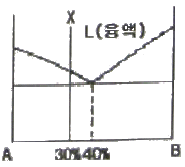
- A : B = 60 : 40
- A : B = 40 : 60
- A : B = 30 : 70
- A : B = 70 : 30
(정답률: 40%)
30. FCC 금속에서 슬립면과 슬립방향으로 옳은 것은?
- 슬립면{110}, 슬립방향＜0111＞
- 슬립면{111}, 슬립방향＜110＞
- 슬립면{111}, 슬립방향＜0001＞
- 슬립면{101}, 슬립방향＜1120＞
(정답률: 81%)
31. 냉간가공하여 결정립이 심하게 변형된 금속을 가열할 때 발생하는 내부변화의 순서로 옳은 것은?
- 결정핵 생성→결정립 성장→회복→재결정
- 결정핵 생성→회복→재결정→결정립 성장
- 회복→결정핵 생성→재결정→결정립 성장
- 회복→재결정→결정핵 생성→결정립 성장
(정답률: 61%)
32. Fick의 제2법칙 식으로 옳은 것은? (단, D는 확산계수이다.)
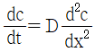
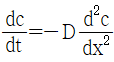
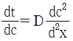
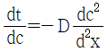
(정답률: 66%)
33. 다음 중 치환형 고용체를 형성하는 인자에 대한 설명으로 틀린 것은?
- 용매원자와 용질원자의 원자직경이 비슷할수록 고용체를 형성하기 쉽다.
- 결정격자형이 동일한 금속끼리는 넓은 범위로 고용체를 형성한다.
- 원자직경의 차이가 15% 이상이면 거의 고용체를 만들지 않는다.
- 용질원자와 용매원자의 전기저항의 차가 적으면 고용체를 형성하기 어렵다.
(정답률: 55%)
34. 탄소강에서 탄소량의 증가에 따라 증가하는 것은?
- 전기저항
- 비중
- 팽창계수
- 열전도도
(정답률: 59%)
35. 금속재료를 냉간가공 하였을 때 성질의 변화 중 틀린 것은?
- 경도는 증가한다.
- 인장강도는 증가한다.
- 연신율은 증가한다.
- 항복점이 높아진다.
(정답률: 74%)
36. 전율 고용체의 상태도를 갖는 합금의 경우 기계적ㆍ물리적 성질은 두 성분의 금속원자비가 얼마일 때 가장 변화가 큰가?
- 10:90
- 20:80
- 40:60
- 50:50
(정답률: 82%)
37. 체심입방격자, 면심입방격자, 조밀육방격자의 단위격자 내의 각각의 원자수로 옳은 것은?
- 2, 4, 2
- 2, 2, 4
- 4, 2, 2
- 2, 4, 4
(정답률: 72%)
38. 규칙-불규칙 변태를 하는 합금에 대한 설명 중 틀린 것은?
- 규칙격자가 생성되면 전기전도도가 커진다.
- 규칙격자가 생성되면 강도 및 경도가 증가한다.
- 규칙상은 상자성체이나, 불규칙상은 강자성체이다.
- 온도가 상승하면 새로운 원자배열로 인하여 Curie정 (Tc)부근에서 비열이 최대가 된 후 감소하여 정상으로 된다.
(정답률: 64%)
39. 마텐자이트(maensite)조직의 결정형상에 속하지 않는 것은?
- 렌즈상(lens phase)
- 입상(graunlar phase)
- 래스상(lath phase)
- 박판상(thin plate phase)
(정답률: 72%)
40. 다음 그림 같이 L1⇄L2+S로 나타나는 반응은 무엇인가? (단, L1, L2 는 용액이며, S는 고상이다.)
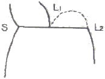
- 공정반응
- 포정반응
- 편정반응
- 공석반응
(정답률: 62%)
3과목: 금속열처리
41. 백심 가단주철을 제조하기 위해서 백주철에 적철광 및 산화철 가루와 함께 풀림 상자에 넣어 900~1000℃에서 40~100시간 가열하면 표면에 발생되는 현상은?
- 침탄
- 탈탄
- 환원
- 흑연화
(정답률: 61%)
42. 탄소강에서 나타나는 고용체의 종류가 아닌 것은?
- 페라이트(ferrite)
- 시멘타이트(cemantite)
- 오스테나이트(austenite)
- 델타 페라이트(δ=ferrite)
(정답률: 45%)
43. 마레이징강(maraging steel)의 열처리 방법에 대한 설명 중 옳은 것은?
- 850℃에서 1시간 유지하여 용체화 처리한 후 공냉 또는 수냉하여 480℃에서 3시간 시효 처리 한다.
- 850℃에서 1시간 유지하여 용체화 처리한 후 공냉 또는 수냉하여 유냉 또는 로냉하여 마텐자이트화 한다.
- 1100℃에서 반드시 수냉 처리하여 오스테나이트를 미세하게 석출, 경화시킨다.
- 1100℃에서 1시간 유지하여 용체화 처리한 후 로냉하여 조직을 안정화시킨다.
(정답률: 66%)
44. 침탄용 강의 담금질 변형을 방지하기 위한 대책으로 틀린 것은?
- 프레스 담금질을 한다.
- 반복 침탄을 한다.
- 마템퍼링을 실시한다.
- 고온으로부터의 1차 담금질을 생략한다.
(정답률: 54%)
45. 담금질한 후 잔류 오스테나이트를 마텐자이트로 변태시키는 처리는?
- 용체화 처리
- 풀림 처리
- 편석제거 처리
- 서브제로 처리
(정답률: 69%)
46. 다음은 Al-4%Cu 합금의 열처리에 관한 설명으로 옳은 것은?
- 500~550℃부근에서 1~2시간 유지한 후 서냉에 의하여 CuAl2를 미세하게 석출 경화시킨다.
- 담금질효과가 없으므로 500℃부근에서 1~2시간 유지한 후 풀림처리하여 내부응력을 제거한다.
- 510~530℃에서 5~10시간 정도 가열한 후 수냉하고, 150~180℃에서 5~10시간 시효 경화시킨다.
- 500~550℃부근에서 1~2시간 유지한 후 수냉에 의하여 무확산 변태 처리로 마텐자이트가 생성한다.
(정답률: 40%)
47. 고주파 경화법에서 유도 전류에 의한 발생열의 침투 깊이(d)를 구하는 식으로 옳은 것은? (단, p는 강재의 비저항(μΩㆍcm), μ는 강재의 투자율 f는 주파수(Hz)이다.)
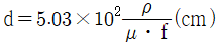
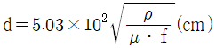
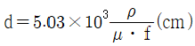
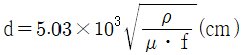
(정답률: 69%)
48. 펄라이트 가단주철의 열처리 방법으로 틀린 것은?
- 합금 첨가에 의한 방법
- 분위기 조절에 의한 풀림 방법
- 열처리 곡선의 변화에 의한 방법
- 흑심 가단주철의 재열처리에 의한 방법
(정답률: 52%)
49. 고체 침탄제가 구비해야 할 조건을 설명한 것 중 틀린 것은?
- 침탄력이 강해야 한다.
- 침탄 온도에서 가열 중 용적 감소가 커야 한다.
- 장시간 반복 사용과 고온에서 견딜 수 있는 내구력을 가져야 한다.
- 침탄 성분 중 P와 S가 적어야 하고 강 표면에 고착물이 융착되지 않아야 한다.
(정답률: 76%)
50. 담금질 균열의 방지책으로 틀린 것은?
- 변태 응력을 줄인다.
- 살두께의 차이 및 급변을 가급적 줄인다.
- Ms~M1 범위에서 급냉시킨다.
- 냉각시 온도를 제품면에 균일하게 한다.
(정답률: 82%)
51. Mn, Ni, Cr 등을 함유한 구조용강을 고온 뜨임 한 후 급냉 할 수 없거나 질화 처리로써 600℃ 이하에서 장시간 가열하면 석출물로 인하여 취화되는데, 이 현상을 개선하는 원소는?
- Cu
- Mo
- Sb
- Sn
(정답률: 76%)
52. 탄소강을 925℃의 침탄온도에서 0.635mm의 침탄 깊이를 얻고 싶을 때 요구되는 침탄시간으로 적당한 것은? (단, 온도에 따른 확산정수는 0.635이다.)
- 1시간
- 2시간
- 3시간
- 4시간
(정답률: 61%)
53. 베릴륨 청동의 인장강도가 150kg1/mm2이고, HV 320~400정도로 제조하기 위한 열처리 방법으로 옳은 것은?
- 760~780℃로부터 물 담금질하고 310~330℃로 2시간 템퍼링 한다.
- 760~780℃로부터 물 담금질하고 210~250℃로 1시간 템퍼링 한다.
- 950~1020℃로부터 물 담금질하고 310~330℃로 2시간 템퍼링 한다.
- 950~1020℃로부터 물 담금질하고 350~380℃로 1시간 템퍼링 한다.
(정답률: 47%)
54. 다음 중 연속적 작업이 곤란한 열처리로는?
- 푸셔로
- 콘베어로
- 피트로
- 로상 진동형로
(정답률: 72%)
55. 직경 25mm의 본재를 A3+30℃까지 가열 후 수냉을 실시 하였을 때 나타나는 냉각의 3단계를 옳게 나열한 것은?
- 비등단계→증기막단계→대류단계
- 비등단계→대류단계→증기막단계
- 증기막단계→비등단계→대류단계
- 대류단계→증기막단계→비등단계
(정답률: 74%)
56. 담금질성에 대한 설명으로 틀린 것은?
- Mn, Mo, Cr 등을 첨가하면 담금질성은 증가한다.
- 결정입도를 크게 하면 담금질성은 증가한다.
- 일반적으로 S가 0.04% 이상이면 담금질성을 증가시킨다.
- B를 0.0025% 첨가하면 담금질성을 높일 수 있다.
(정답률: 69%)
57. 주철에 함유된 Si의 영향이 틀린 것은?
- 소지상(素地相)의 Si농도가 강철보다 훨씬 높으므로 오스테나이트 온도가 강철보다 높아야 한다.
- Si량의 증가에 따라 공정점, 공석점이 저온, 고탄소쪽으로 이동한다.
- 주철 중에 포함된 Si는 강력한 흑연화 작용이 있어 시멘타이트를 쉽게 흑연화 한다.
- Si는 오스테나이트 중에 탄소가 고용하는 것을 방해하는 작용이 강하다.
(정답률: 42%)
58. 탄소강을 담금질할 때 재료 외부와 내부의 담금질효과가 다르게 나타나는 현상을 무엇이라 하는가?
- 질량효과
- 노치효과
- 천이효과
- 피니싱효과
(정답률: 78%)
59. 탄소강의 열처리 방법 중 오스테나이징 온도까지 가열한 후 서서히 냉각함으로써 연화를 목적으로 하는 열처리 방법은?
- 풀림
- 뜨임
- 담금질
- 노멀라이징
(정답률: 71%)
60. 다음 ()안에 알맞은 것은?
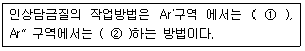
- ①급냉, ②급냉
- ①급냉, ②서냉
- ①서냉, ②급냉
- ①서냉, ②서냉
(정답률: 75%)
4과목: 재료시험
61. 굴곡 시험으로 알 수 없는 것은?
- 전성
- 굽힘 저항
- 경도
- 균열의 유무
(정답률: 62%)
62. 용제 제거성 염색침투탐상검사의 기본절차로 옳은 것은?
- 전처리→제거 처리→현상 처리→침투 처리→관찰→후처리
- 전처리→제거 처리→침투 처리→관찰→현상 처리→후처리
- 전처리→침투 처리→현상 처리→제거 처리→관찰→후처리
- 전처리→침투 처리→제거 처리→현상 처리→관찰→후처리
(정답률: 60%)
63. 자분탐상시험법의 자화 방법에 해당되는 것은?
- 투과법
- 공진법
- 통전법
- 펄스 반사법
(정답률: 62%)
64. 압입자를 이용한 경도측정법이 아닌 것은?
- 쇼어경도
- 브리넬경도
- 비커스경도
- 로크웰경도
(정답률: 76%)
65. 강재의 재질 판별법 중의 하나인 불꽃시험시 시험통칙에 대한 설명으로 틀린 것은?
- 유선의 관찰시 색깔, 밝기, 길이, 굵기 등을 관찰한다.
- 바람의 영향을 피하는 방향으로 불꽃을 방출시킨다.
- 0.2% 탄소강의 불꽃 길이가 500mm 정도의 압력을 가한다.
- 시험장소는 개인의 작업안전을 위하여 아주 밝은 실내가 좋다.
(정답률: 86%)
66. 구리, 황동, 청동 등의 조직을 관찰하기 위한 부식액은?
- 피크린산 용액
- 염화제이철 용액
- 질산초산 용액
- 수산화나트륨 용액
(정답률: 79%)
67. 강재를 퀜칭 후 경도검사는 일반적으로 로크웰 경도 C-스케일을 사용한다. 이 때 압입체의 재질과 규격이 옳게 연결된 것은?
- 다이아몬드-120°
- 강철볼-1/10“
- 다이아몬드-116°
- 강철볼-1/8“
(정답률: 81%)
68. 현미경 배율이 100배 하에서 1평방인치의 면적 내에 있는 결정립의 수가 128개였다면 ASTM 결정립도 번호는?
- 2
- 4
- 6
- 8
(정답률: 57%)
69. 재료에 어떤 일정한 하중을 가하고 어떤 온도에서 긴 시간 동안 유지하면 시간이 경과함에 따라 스트레인이 증가현상으로 각종 재료의 역학적 양을 결정하는 재료시험은?
- 피로시험
- 비파괴시험
- 인장강도시험
- 크리프시험
(정답률: 78%)
70. 기어나 베어링 등에 많이 발생하며 상대운동을 하는 표면에서 반복하중이 가해지면 마찰표면층에서 파괴가 일어나 그 결과 마모입자가 발생하는 것은?
- 응착마모
- 연삭마모
- 피로마모
- 부식마모
(정답률: 65%)
71. 다음 중 안전보건교육의 단계별 종류에 해당하지 않는 것은?
- 기초교육
- 지식교육
- 기능교육
- 태도교육
(정답률: 71%)
72. 와전류탐상검사의 특징을 설명한 것 중 틀린 것은?
- 비전도체만을 검사할 수 있다.
- 고온부위의 시험체에도 참상이 가능하다.
- 시험체에 비접촉으로 탐상이 가능하다.
- 시험체의 표층부에 있는 결함 검출을 대상으로 한다.
(정답률: 71%)
73. 설퍼 프린트(sulfue print)법에 사용되는 재료로 옳은 것은?
- 증감지, 투과도계
- 글리세린, 기계유
- 황산, 브로마이트 인화지
- 형광 침투제, 유화제
(정답률: 79%)
74. 다음 중 비틀림 시험에 대한 설명으로 옳은 것은?
- 비틀림 시험의 주목적은 재료에 대한 강성계수와 비틀림 강도 측정에 있다.
- 비교적 가는 선재의 비틀림 시험에서는 응력을 측정하여 시험 결과를 얻는다.
- 비틀림 시험편은 양단을 고정하기 쉽게 시험부분보다 얇게 만든다.
- 비틀림 각도 측정법은 펜듀럼식, 탄성식, 레버식이 있다.
(정답률: 67%)
75. 연강을 인장 시험하여 하중-연신 곡선으로부터 얻을 수 없는 것은?
- 비례한계
- 탄성한계
- 최대하중점
- 피로한계
(정답률: 45%)
76. 방사선 투과 검사에서 투과 사진의 상을 선명하게 촬영하기 위한 조건으로 틀린 것은?
- 방사선원의 크기가 작을수록
- 시험체와 선원간 거리가 멀수록
- 시험체와 필름간 거리가 가까울수록
- 선원과 시험체, 필름간 배치가 45° 일 때
(정답률: 50%)
77. 금속재료의 연성(ductility)을 알기 위한 시험은?
- 비틀림 시험(torsion test)
- 에릭션 시험(erichsen test)
- 충격 시험(impact test)
- 굽힘 시험(bending test)
(정답률: 70%)
78. 육안조직 검사와 관계없는 것은?
- 매크로(macro) 검사하고도 한다.
- 배율 10배 이하의 확대경으로 검사한다.
- 결정입경이 0.1mm 이하의 것을 검사한다.
- 육안검사법에는 설퍼프린트법이 있다.
(정답률: 57%)
79. 충격시험편에서 노치(Notch) 반지름의 영향을 설명한 것 중 옳은 것은?
- 노치 반지름이 클수록 응력집중력이 크다.
- 노치 반지름이 클수록 충격치가 낮다.
- 노치 반지름이 클수록 흡수에너지가 크다.
- 노치 반지름이 클수록 파괴가 잘 일어난다.
(정답률: 66%)
80. 시험편의 지름 14mm, 평행부 길이 60mm, 표점거리 50mm, 최대하중이 9930kgf일 때 인장강도 약 몇 kgf/mm2인가?
- 43.9
- 54.3
- 64.5
- 74.8
(정답률: 46%)